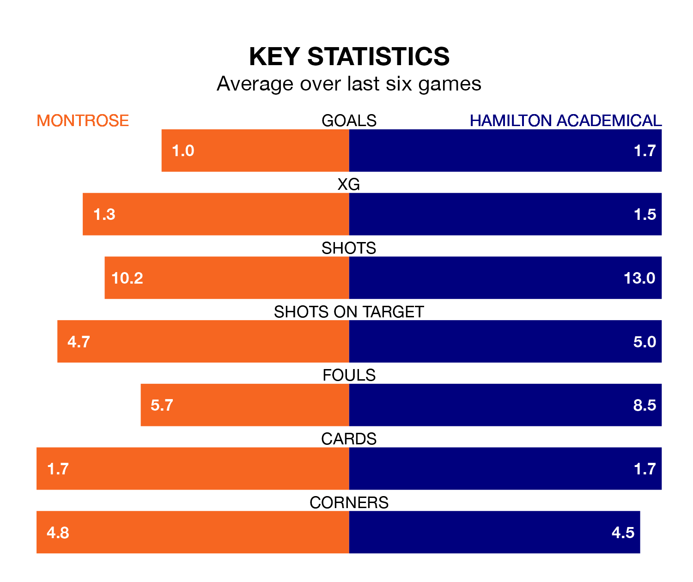

Hamilton Academical travel to Links Park for Saturday's match against Montrose looking to bounce back from defeat last time out in League One.
The Accies, who sit second in the league after 33 games, fell to a 2-0 home defeat to Falkirk on April 13.
They face a Montrose side who also lost their last match, a 1-0 defeat to Edinburgh City, and who sit fourth in the table.
With 66 goals in 33 games so far this season, Hamilton Academical are the league's second-highest scorers with 2.0 goals per game. And they are conceding fewer than average, letting in 26 goals at a rate of 0.8 per game.
Montrose, meanwhile, are average scorers, with 1.6 goals per game. They have also conceded 1.6 goals per game.
In Kevin O'Hara, the Accies have one of the league's sharpest shooters so far this season. He has notched 13 goals in 31 appearances, to sit fourth in the scoring charts.
His goal rate of one every 188 minutes is quicker than that of Kane Hester, the Gable Endies's top scorer with a goal every 234 minutes, and a total of 10 goals in 32 games.
The home side are in disappointing form in League One, with one win and two draws from their last six games.
With four wins and a draw over that period, the visitors' form is much better – they have taken 13 points from 18, compared to Montrose's five.
In the last three years, Montrose and Hamilton Academical have played each other on three occasions. Hamilton Academical won two of them and they drew once.
Their last meeting was on January 27, when they played out a 1-1 draw.
Saturday's match will be refereed by Alan James Muir, who has taken charge of two League One games so far this season, issuing one red card and booking five players. He has awarded one penalty.
He is yet to oversee a match featuring either Montrose or Hamilton Academical this season.
Updated: 15:40 (UTC), 18/04/24